|
||
Install and Configure the Tomcat Server |
||
| Here we are illustrating the installation process only for Windows. Steps involved in installation and configuration process for Tomcat 6.0.10 are illustrated below: | ||
| Step 1: | ||
| Installation of JDK: Don't forget to install JDK on your system (if not installed) because any tomcat requires the Java 1.5 (Java 5) and Java 1.6 (Java 6) and then set the class path (environment variable) of JDK. | ||
| Step 2: | ||
Setting the class path variable for JDK: Two methods are there to set the classpath.
|
||
| First right click on the My Computer->properties->advance->Environment Variables->path. Set bin directory path of JDK in the path variable. |
||
| Step 3: | ||
| Now it's time to shift on to the installation process of Tomcat 6.0.10. It takes various steps for installing and configuring the Tomcat 6.0. For Windows, Tomcat comes in two forms : .zip file and the Windows installer (.exe file). Here we are exploring the installation process by using the .exe file. The directory C:\apache-tomcat-6.0.10 is the common installation directory as it is pre-specified C:\ as the top-level directory. First unpack the zipped file and simply execute the .exe file. |
||
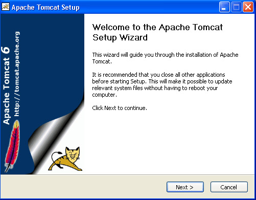 |
||
| The above shown screen shot is the first one shown in the installation process. Just click on the Next button to proceed the installation process. | ||
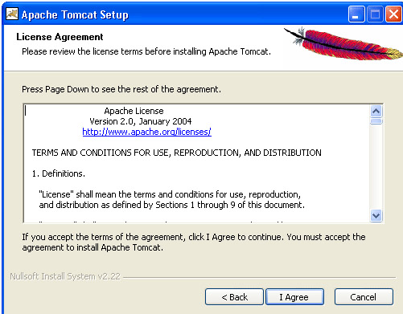 |
||
| click "I Agree" button to continue the installation process. | ||
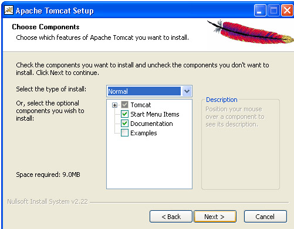 |
||
| Click next to go with the default components choosen. | ||
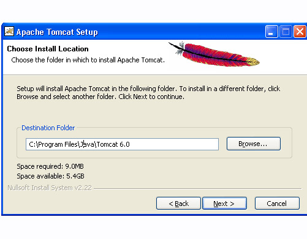 |
||
| Choose the location for the Tomcat files as per your convenience. You can also choose the default location. | ||
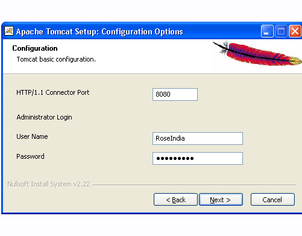 |
||
| Now choose the port number on which you want to run the tomcat server. Tomcat uses the port number 8080 as its default value. But Most of the people change the port number to 80 because in this case the user is not required to specify the port number at request time. But we are using here the default port number as 8080. Choose the user name and password as per your convenience. We can change the port number even the installation process is over. For that, go to the specified location as " Tomcat 6.0 \conf \server.xml ". Within the server.xml file choose "Connector" tag and change the port number. | ||
| E.g : While using the port number 8080, give the following request in the address bar as: | ||
| Default Port: http//localhost:8080/index.jsp | ||
| In case of port number number 80 just type the string illustrated below in the address bar: | ||
| New Port: http://localhost/index.jsp | ||
| Note that we do no need to specify any port number in the URL. | ||
| Now click on the Next button to proceed the installation process. | ||
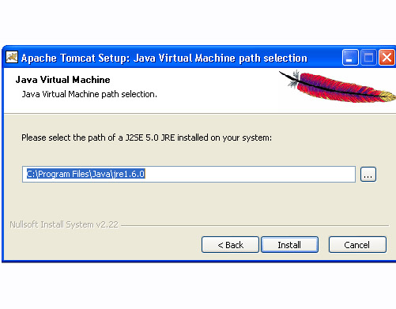 |
||
| The installation process shows the above screen as the next window. This window asks for the location of the installed Java Virtual Machine. Browse the location of the JRE folder and click on the Install button. This will install the Apache tomcat at the specified location. | ||
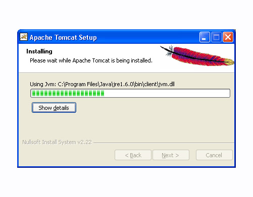 |
||
| To get the information about installer click on the "Show details" button. | ||
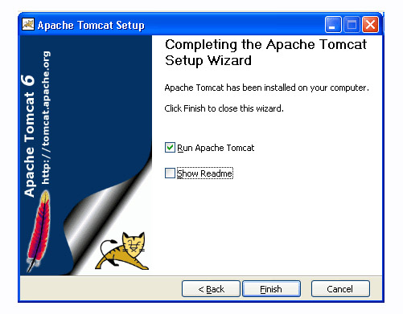 |
||
| After completion of installation process it will display the window like the above one. | ||
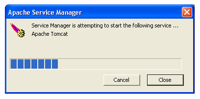 |
||
| On clicking at Finish button, a window like the above one will display a message printed on the window given below. | ||
| After successfully installing, a shortcut icon to start the tomcat server appears in the icon tray of the task bar as shown above. Double clicking the icon, displays the window of Apache Manager for Tomcat. It will show the "Startup type" as manual since we have changed the destination folder for tomcat during the installation process. Now we can configure the other options like "Display name" and "Description" .We can also start, stop and restart the service from here. | ||
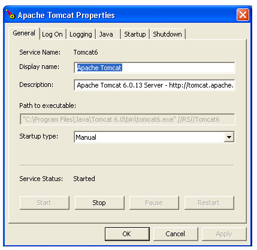 |
||
| If installation process completes successfully then a window as shown below will appear. | ||
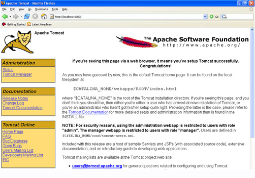 |
||
| Now , set the environment variable for tomcat : | ||
| Step 4: | ||
| Setting the JAVA_HOME Variable: Purpose of setting the environment variable JAVA_HOME is to specify the location of the java run time environment needed to support the Tomcat else Tomcat server does not run. This variable contains the path of JDK installation directory. Note that it should not contain the path up to bin folder. | ||
set JAVA_HOME=C:\Program Files\Java\jdk1.5.0_08 |
||
| Here, we have taken the URI path according to our installation convention | ||
| For Windows XP, Go through the following steps : | ||
| Start menu->Control Panel->System->Advanced tab->Environment Variables->New->set the Variable Name as JAVA_HOME and Variable Value as C:\Program Files\Java\jdk1.6.0 and then click on all the three ok buttons one by one. It will set the JDK path. | ||
| For Windows 2000 and NT, follow these steps : | ||
| Start->Settings->Control Panel->System->Environment Variable->New->set the Variable Name as JAVA_HOME and Variable Value as C:\Program Files\Java\jdk1.6.0 and then click on all the three ok button one by one. It will set the JDK path. | ||
| Now , Start the Tomcat Server : Start the tomcat server from the bin folder of Tomcat 6.0 directory by double clicking the " tomcat6.exe " file. You can also create a shortcut of this .exe file at your desktop. | ||
| Stop the Tomcat Server: Stop the server by pressing the "Ctrl + c" keys. | ||
Deploying Web Applications to Tomcat : |
||
| If all goes well we can test Tomcat to see if is working. Start up your favorite browser and go to http://localhost:8080 (change the port number if you altered the default port number in server.xml).You should see the Tomcat startup page (see figure below). | ||
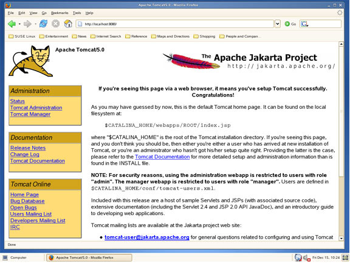 |
||
| Tomcat Management : | ||
| Use the "Tomcat Management" link from the Tomcat startup page. The users go to http://localhost:8080/manager/html (see the figure ). | ||
| Before the management page loads you will asked for a user name and password. These are not the same as the administrator?s user name and password for the server. The opening page gives us a clue to the user name and password required: | ||
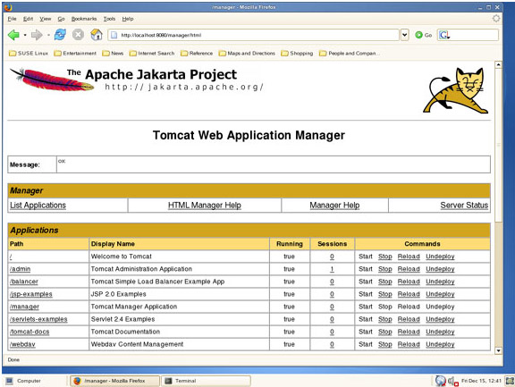 |
||